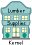

Kernel Repair Shop


| 
Kernel Repair Shop |
|
|
|
Cache
If you want to get the Kernel up and running on an InterSystems Cache system, you should ignore the installation tips below, and instead install the Hardhats' pre-configured "Diamond" file. There are a few "knotholes" in the lumber that constitutes the
Kernel! Here are a few helpful hints
to get you through an installation. Once again, if you can use the Cache "Diamond" configuration, by all means do so!
|

Overview | Intro
| Sign-On/Security | Menu
Management |
Device Management | Task
Management | KIDS | Repairs
|
Search | Home | MUMPS| Fileman | Kernel | C/S, Mailman, Web | Programmer Tools| Applications